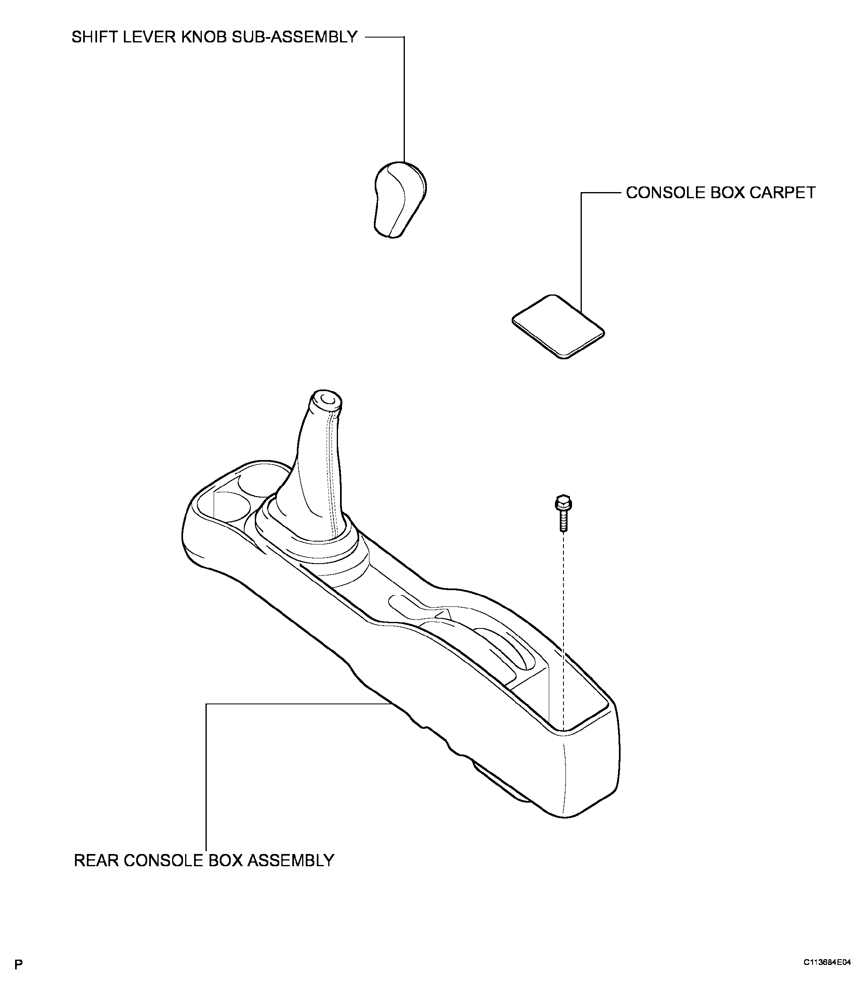
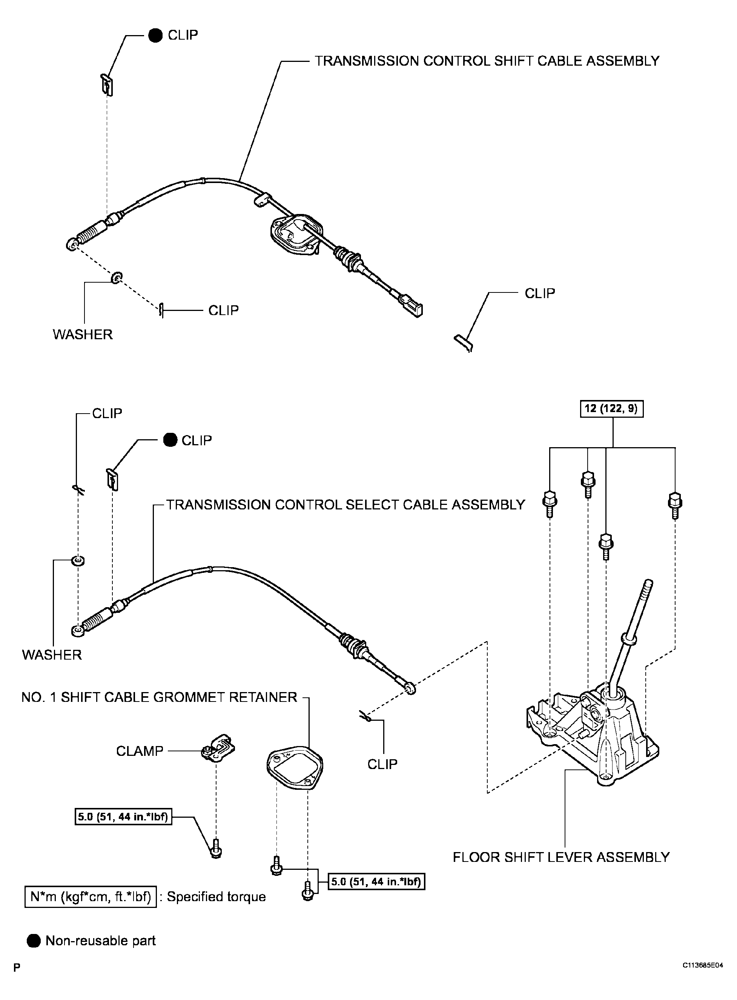

Transmission Control Cable: Components
Fig 1: Identifying Transmission Control Cable Components (1 Of 2)

Courtesy of © TOYOTA, LICENSE AGREEMENT TMS1002
Fig 2: Identifying Transmission Control Cable Components (2 Of 2)

Courtesy of © TOYOTA, LICENSE AGREEMENT TMS1002